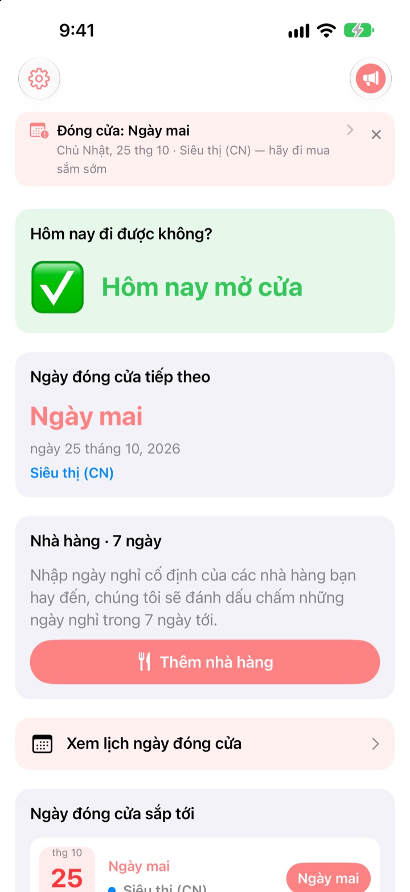
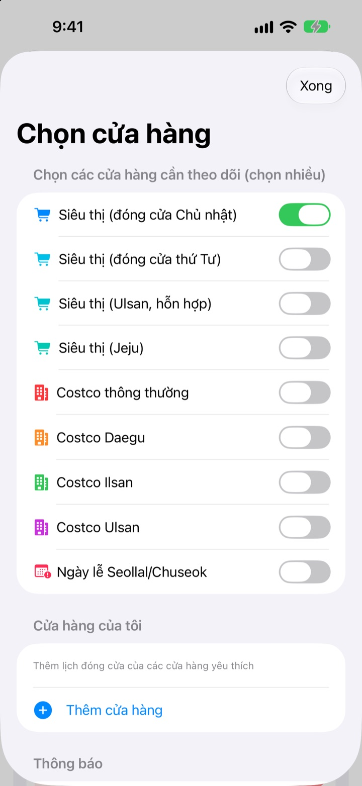
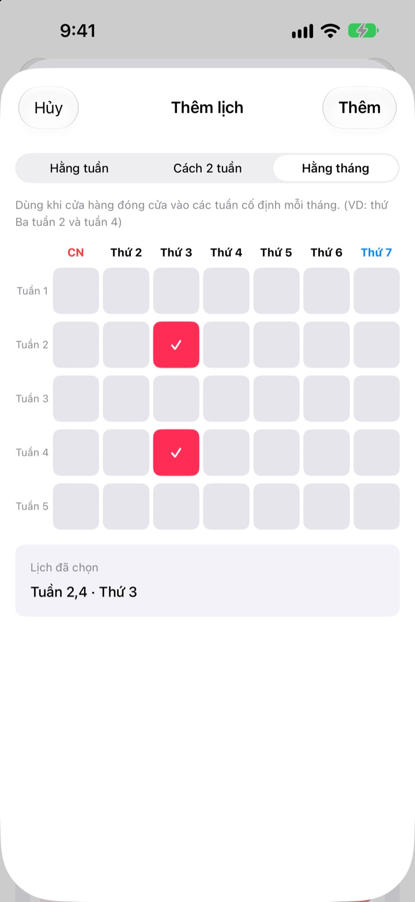
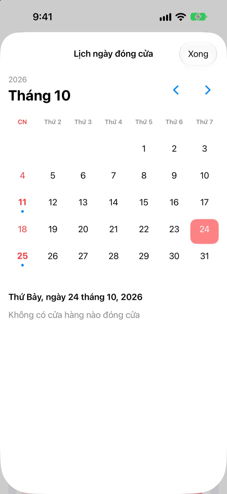
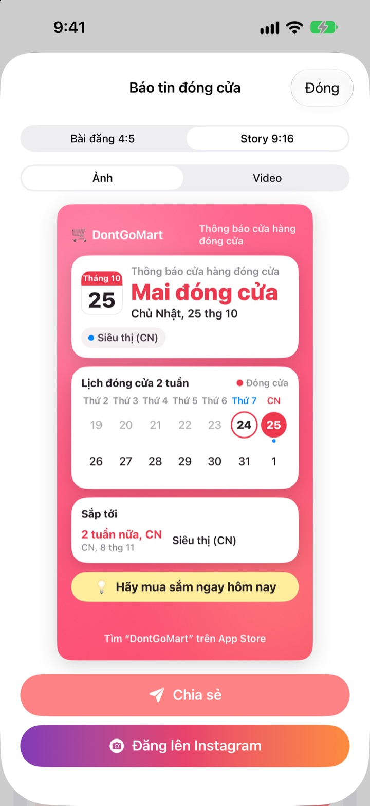

Trước khi đi chợ,
xem hôm nay có mở cửa không
Mở ứng dụng là thấy ngay cửa hàng bạn chọn hôm nay có mở không. Trước mỗi ngày nghỉ sẽ có nhắc nhở, để bạn không còn đến nơi rồi gặp cửa đóng.
Mọi tính năng đều miễn phí. Không cần tài khoản, không quảng cáo.

Thử với cửa hàng của bạn
Chọn một cửa hàng để xem ngay hôm nay có mở không và ngày nghỉ tới là khi nào. Tính theo đúng quy tắc của ứng dụng.
Bạn từng cầm danh sách đi chợ rồi gặp cửa đóng chưa?
Ở Hàn Quốc, đại siêu thị phải nghỉ hai ngày mỗi tháng, nhưng ngày nào thì tùy nơi. Phần lớn là Chủ nhật tuần thứ hai và thứ tư, có nơi là thứ Tư, còn Ulsan và Jeju có quy định riêng. Costco thì mỗi chi nhánh mỗi khác. DontGoMart tính ngày nghỉ theo quy tắc của cửa hàng bạn hay đến và cho bạn biết trước tiên hôm nay có đi được không.
Đúng cho từng vùng
Chọn cửa hàng nghỉ Chủ nhật hay thứ Tư, hoặc vùng có lịch riêng như Ulsan và Jeju. Costco thông thường và các chi nhánh Daegu, Ilsan, Ulsan được cài đặt riêng.
Ngày nghỉ đúng ngày Seollal và Chuseok cũng được hiển thị, và bạn có thể theo dõi nhiều cửa hàng cùng lúc.

Cửa hàng gần nhà và quán ăn quen
Cửa hàng chưa có trong danh sách thì tự thêm: hằng tuần, cách tuần, hoặc nghỉ vào tuần thứ mấy, thứ mấy trong tháng.
Với quán ăn, chỉ cần dán liên kết chia sẻ từ Naver Map hoặc chọn ảnh chụp màn hình trang thông tin quán, ngày nghỉ cố định sẽ tự được điền. Chữ trong ảnh chỉ được đọc trên thiết bị.

Nhắc nhở và widget để không quên
Chọn nhận nhắc trước 1, 2, 3 hoặc 7 ngày vào giờ bạn muốn, và hôm trước ngày nghỉ còn được nhắc rằng hôm nay là ngày nên đi mua sắm.
Widget trên Màn hình chính và Màn hình khóa cho thấy ngày nghỉ gần nhất, Chủ nhật này có mở không và lịch nghỉ 7 ngày tới của quán quen. Lịch hiển thị cả tháng.

Chia sẻ bằng một tấm thẻ
Biến tin ngày nghỉ thành thẻ có lịch hai tuần và mẹo đi chợ, rồi gửi vào nhóm gia đình. Có cỡ bài đăng và tin Instagram, cả video ngắn.

Bắt đầu chỉ với ba bước
- 1
Chọn cửa hàng
Bật những cửa hàng và vùng bạn hay mua. Bao nhiêu cũng được.
- 2
Bật nhắc nhở
Chọn nhắc trước mấy ngày và lúc mấy giờ.
- 3
Thêm widget
Xem ngay trên Màn hình chính hoặc Màn hình khóa mà không cần mở ứng dụng.
Quy tắc nghỉ theo cửa hàng
- Siêu thị (đóng cửa Chủ nhật)
- Chủ nhật tuần 2 và 4 · hầu hết các vùng
- Siêu thị (đóng cửa thứ Tư)
- Thứ Tư tuần 2 và 4 · một phần Gyeonggi, Cheongju
- Siêu thị (Ulsan)
- Thứ Tư tuần 2, Chủ nhật tuần 4
- Siêu thị (Jeju)
- Thứ Sáu tuần 2, thứ Bảy tuần 4
- Costco thông thường
- Chủ nhật tuần 2 và 4
- Costco Daegu
- Thứ Hai tuần 2 và 4 · Daegu, Daegu Innovation
- Costco Ilsan
- Thứ Tư tuần 2 và 4
- Costco Ulsan
- Thứ Tư tuần 2, Chủ nhật tuần 4
- Seollal, Chuseok
- nghỉ đúng ngày lễ
Ngày nghỉ bắt buộc do chính quyền địa phương quy định và có thể thay đổi. Nếu thấy không khớp, hãy báo cho chúng tôi qua email bên dưới.
Câu hỏi thường gặp
Ngày nghỉ không khớp với thực tế.
Ngày nghỉ bắt buộc của đại siêu thị theo quy định địa phương và khác nhau từng vùng. Hãy kiểm tra trong Cài đặt xem đã chọn đúng loại cửa hàng (nghỉ Chủ nhật, nghỉ thứ Tư, Ulsan, Jeju…) chưa. Nếu vẫn không khớp, gửi tên siêu thị và khu vực qua email, chúng tôi sẽ kiểm tra và cập nhật.
Cửa hàng của tôi không có trong danh sách.
Bạn có thể thêm thành cửa hàng của riêng mình. Chọn hằng tuần, cách tuần, hoặc tuần thứ mấy và thứ mấy trong tháng, ví dụ Chủ nhật tuần 2 và 4, rồi lưu.
Ngày nghỉ của quán ăn điền chưa đúng.
Khi nhập bằng liên kết Naver Map, trang thông tin của quán cần ghi ngày nghỉ cố định. Khi dùng ảnh chụp màn hình, hãy chụp sao cho dòng chữ về ngày nghỉ hiện trên màn hình. Bạn có thể sửa trước khi lưu.
Tôi không nhận được nhắc nhở.
Kiểm tra đã cho phép thông báo trong Cài đặt > Thông báo > DontGoMart và đã bật nhắc ngày nghỉ trong ứng dụng.
Widget không cập nhật.
Mở ứng dụng một lần là widget được làm mới. Nếu vẫn vậy, hãy xóa widget rồi thêm lại.
Tip là gì?
Mọi tính năng của DontGoMart đều miễn phí. Tip cà phê, bánh ngọt và bữa ăn là để ủng hộ nhà phát triển. Sau khi tip, bạn sẽ thấy lời cảm ơn và huy hiệu người ủng hộ kèm số lần tip.
Hỏi về thanh toán hoặc hoàn tiền ở đâu?
Apple xử lý giao dịch mua trong ứng dụng, nên yêu cầu hoàn tiền tại reportaproblem.apple.com. Các câu hỏi khác, hãy gửi email cho chúng tôi.
Dữ liệu của tôi được xử lý thế nào?
Không có tài khoản, quảng cáo hay công cụ theo dõi, và chữ trong ảnh chụp màn hình chỉ được đọc trên thiết bị. Xem chi tiết trong Chính sách quyền riêng tư bên dưới.
Có câu hỏi hay ý tưởng? Gửi đến hyunho.lee.1993@gmail.com. Chúng tôi thường trả lời trong 1–2 ngày.